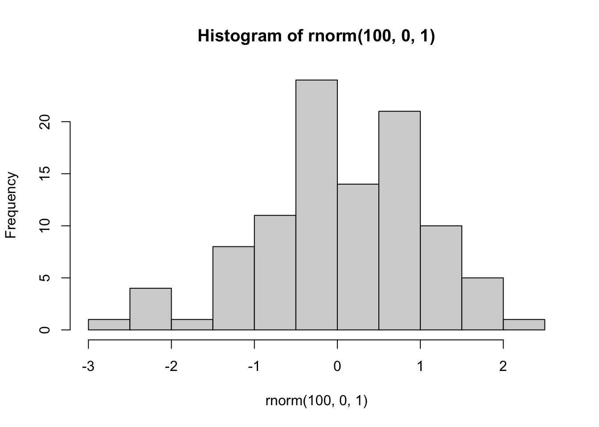

hist(rnorm(100,0,1))
This course website is created using a suite of open-source tools, including quarto, R, and R-studio. All of the pages are written using quarto markdown, and rendered into this website through Rstudio. The website is hosted on github pages. The source code for this website is also available on github. The source code can be accessed by clicking on the github links in the right-side navigation .
The purpose of this page is to give examples of writing in markdown and .qmd documents.
See the quarto documentation website for many examples and general information
The quarto approach to document creation is very powerful because it can integrate regular language together with the inputs and outputs of programming languages, like R or python.
Most writing is done in plain text using markdown:
This is an example of embedding R code into a .qmd document. The R code snippet is printed to the document. The code is also executed and the output is printed to the document.
Specifically, this one line of code samples 100 random numbers from a normal distribution, and then plots the values in a histogram.
Quarto websites include Bootstrap 5 libraries. As a result, components and other elements from Bootstrap 5 can be placed directly into .qmd files.
For example, if the following html is printed directly in a .qmd file
The bootstrap 5 component (in this case a text alert). Will be shown in the document:
A simple primary alert—check it out!
It is possible to write text in multiple columns using the Bootstrap CSS grid layout system.
The markdown below uses [fenced divs](https://quarto.org/docs/authoring/markdown-basics.html#divs-and-spans) to declare two columns.
The multi-column text looks like this on the webpage:
This column takes 1/3 of the page.
This column takes 2/3 of the page